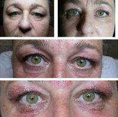

Blepharoplasty – surgery to change the shape of age, eye shape. This type of surgery involves excision of excess skin and fat formations. The indications for blepharoplasty are: the overhang of the skin of the upper and lower eyelids, “fatty bags” of eyelids, drooping of the lower corners of the eyes, cut and shape of the eyes.
Excess skin and fat are removed during surgery through the incisions in natural folds of eyes. Blepharoplasty is conducted in a hospital under general anesthesia. Duration – from 2 to 3 hours. The period of rehabilitation does not exceed of 10-12 days.
Blepharoplasty (eyelid surgery) is a plastic surgery on the upper and (or) lower eyelids during which improves the appearance of eyelids, and eliminates or reduces age-related changes around the eyes. Blepharoplasty can be performed as an isolated procedure or in combination with other aesthetic surgeries. Blepharoplasty allows you to remove bags under the eyes, lines and wrinkles around the eyes.
What is a blepharoplasty (eyelid surgery)? In the facial expressions the eyes play a key role – they convey emotions radiate energy and give an idea of the age. With time they change, as a result people look sad or tired, even though it is not.
The aging process also affects the shape of the eyelid – they become flabby and drooping. If under-eye bags and puffiness are formed, then the person seems more tired and older than it really is.
Eyes are the aesthetic center of the face, so blepharoplasty is used, for improving the appearance of the whole, and to eliminate the signs of aging in this area. Blepharoplasty gives the face a more youthful, energetic and rested appearance.
Preparing for blepharoplasty surgery
Blepharoplasty Surgery Can Be Performed On Upper Eyelids, Lower Eyelids, Or Both
Blepharoplasty may be carried out in stationary conditions under local anesthesia, or anesthesia in combination with a local anesthetic. Surgery may last from 30 minutes to 2 hours.
There are many techniques of blepharoplasty, some of them are outdated, some are used to this day. Modern techniques of blepharoplasty assume almost imperceptible incisions eyelids, located along the natural folds and maximum preservation of fat fiber of eyelids.
Among them is the technique that allows to perform blepharoplasty without any external incisions and without suturing. Blepharoplasty surgery completed with overlay dressings, which are removed after 4-6 hours after surgery. Pain in the postoperative period is not expressed.
After blepharoplasty surgery
Blepharoplasty Is Surgery For Bags And Dark Circles Under The Eyes
Within 1-2 weeks after blepharoplasty may be a swelling of tissues. Bruises usually disappear in 5-8 days after surgery. Most patients can return to work after 7-10 days after blepharoplasty. Since that time, you can use decorative hypoallergenic cosmetics.
Sunglasses protect well not only from ultraviolet radiation, but also from prying eyes, so it is advisable to use them for 1-2 weeks after blepharoplasty. In most cases, scarring after surgery blepharoplasty on eyelids is not visible, but the effect remains forever.
Blepharoplasty: contraindications
Blepharoplasty is has virtually no age restrictions. However, there are some contraindications for blepharoplasty: acute and chronic decompensated heart disease, diabetes, blood diseases, bronchial asthma, systemic diseases (rheumatic fever, systemic lupus erythematosus, and others). Blepharoplasty is not carried out as in chronic diseases of eyelids and conjunctiva.However, before procedure the patient should consult with a specialist of clinic. On the consultation, when choosing treatment methods, specialist must take into account all the indications for the procedure, as well as take into account all possible contraindications to its performance.
To achieve the most pronounced effect of the procedure should take into account the individual characteristics of the patient (skin type, age-related changes, especially anatomy).
Blepharoplasty Surgeon Reviews
Indications for blepharoplasty
The main indications for blepharoplasty are:
- “Aging” eyelid;
- tired glance (“heavy” eyelids);
- overhang of the skin of the upper eyelid;
- “eye bags”;
- excess skin of the lower eyelids.
Contraindications to blepharoplasty
Eye Bag Removal Before And After Pic
- high blood or intraocular pressure;
- dryness of the eyes;
- thyroid disease;
- diseases of the cardiovascular system and others severe diseases of internal organs;
- diabetes;
- oncological diseases;
- a bleeding disorder;
- pregnancy;
- lactation.
With the help of blepharoplasty is possible to solve the following problems:
Get Blepharoplasty And Look Younger
- get rid of excess skin and fat around the eyelids;
- reduce the signs of aging changes;
- carry out plastic of periorbital muscles;
- change the cut and shape of the eye;
- eliminate congenital and acquired defects of eyelids.
Types of blepharoplasty
There are following types of blepharoplasty:
- Upper eyelid blepharoplasty eliminates overhang. This type of surgery is most often performed through a skin incision located on the upper eyelid crease. With the help of such incision you can remove excess skin.
Most often in conjunction with this surgery carried out plastic of muscles of upper eyelid and removed excess fat tissue, although happens when only enough to remove the “extra” skin.
Look Younger With Blepharoplasty
- Blepharoplasty of lower eyelids helps to get rid of bags under the eyes, swelling and hernias. The seam from surgery passes on the ciliary edge of the eyelid. Also, on the lower eyelid can be performed transconjunctival blepharoplasty, when incision is on the inside of the eyelid. This type of surgery is possible if you want only the redistribution or removal of fatty tissue around the eye, without removing the skin flaps. This kind of blepharoplasty is relevant for young patients.
- Circular blepharoplasty – simultaneous plastic of upper and lower eyelids.
- Correction of Asian eyes.
- Exophthalmos.
- Canthopexy.
Transconjunctival Lower Eyelid Blepharoplasty Before After Photo
Through these openings are removed or redistributed excesses of fat hernias. Flaps of skin are excised. Exophthalmos – pathological eyeball displacement forward from the eye socket (protruding eyes), in some cases with displacement to one side.
It is a symptom of pathological processes localized in eye sockets and some common diseases (true exophthalmos). Sometimes exophthalmos arises in unilateral sharply expressed myopia, paralysis of external eye muscles. The displacement of the eyeball may occur in patients with congenital asymmetry of the facial bones (called a false exophthalmos).
There is a natural asymmetry displacement of the eye, but for most people the difference is less than 0.5 mm and almost imperceptible; very rarely it reaches of 1,5-2 mm.